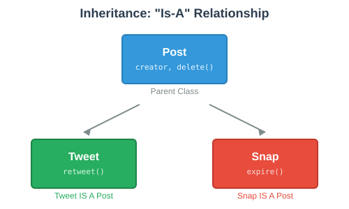
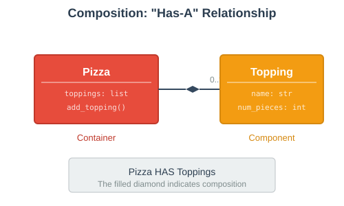

class Tweet:
def __init__(self, creator, content):
self.creator = creator
self.content = content
self.likes = 0
def like(self):
self.likes += 1
def delete(self):
print(f"Deleted by {self.creator}")
class InstagramPost:
def __init__(self, creator, content):
self.creator = creator
self.content = content
self.likes = 0
def like(self):
self.likes += 1
def delete(self):
print(f"Deleted by {self.creator}")Inheritance & Composition
Patterns for Code Reuse
Today’s Goals
By the end of this session, you’ll be able to:
Explain when and why to use inheritance
Create subclasses that inherit from parent classes
Override methods and use
super()to call parent methodsUnderstand the Liskov Substitution Principle
Explain when and why to use composition
Design classes that contain other objects
Choose between inheritance and composition for a given problem
Why Code Reuse Matters
Imagine you’re building a social media app with different post types:
Problem: Most of this code is duplicated!
Two Patterns for Code Reuse
| Inheritance | Composition |
|---|---|
"Is-a" relationship | "Has-a" relationship |
A Tweet is a Post | A Pizza has Toppings |
Child class inherits from parent | Object contains other objects |
Reuse through class hierarchy | Reuse through object references |
Inheritance
What Is Inheritance?
Inheritance lets a class reuse code from another class.

class Post: # Parent class (superclass)
def __init__(self, creator):
self.creator = creator
def delete(self):
print(f"Deleted by {self.creator}")
class Tweet(Post): # Child class (subclass)
pass # Inherits everything from Post!How Inheritance Works
class Post:
def __init__(self, creator):
self.creator = creator
def delete(self):
print(f"Deleted by {self.creator}")
class Tweet(Post):
def retweet(self):
print(f"Retweeted by {self.creator}")
class Snap(Post):
def expire(self):
print(f"Snap by {self.creator} expired")tweet = Tweet("alice")
tweet.delete() # Inherited from Post!
tweet.retweet() # Defined in Tweet
snap = Snap("bob")
snap.delete() # Inherited from Post!
snap.expire() # Defined in Snap🔮 Predict: What Gets Inherited?
class Post:
def __init__(self, creator):
self.creator = creator
def delete(self):
print("deleted")
class Tweet(Post):
def retweet(self):
print("retweeted")
class Snap(Post):
def expire(self):
print("expired")
tweet = Tweet("alice")
tweet.expire() # What happens?Turn to a neighbor and discuss for 60 seconds.
AttributeError: 'Tweet' object has no attribute 'expire'
Siblings don’t share methods—only parent methods are inherited.
type() vs. isinstance()
class Post:
pass
class Tweet(Post):
pass
tweet = Tweet()type(tweet) == Tweet # True - exact type
type(tweet) == Post # False - not exactly a Post
isinstance(tweet, Tweet) # True - is a Tweet
isinstance(tweet, Post) # True - is ALSO a Post!An instance of a subclass is also an instance of the parent class.
The Liskov Substitution Principle
 | Barbara Liskov MIT Professor, first American woman to earn a Ph.D. in computer science The Principle: If S is a subclass of C, then instances of C may be replaced with instances of S without breaking the program. |
In other words: A subclass should be usable anywhere its parent class is expected.
Overriding Methods
Why Override Methods?
Sometimes a subclass needs to change how a method works, not just add new methods.
class Post:
def __init__(self, creator):
self.creator = creator
def edit(self, new_content):
self.content = new_content
print("Post edited")
class Tweet(Post):
def edit(self, new_content):
# Tweets can't be edited!
print("Error: Tweets cannot be edited")Overriding: Defining a method in the subclass with the same name as a parent method.
Overriding: A First Attempt
class BankAccount:
def __init__(self, owner, balance=0):
self.owner = owner
self.balance = balance
def withdraw(self, amount):
if amount <= self.balance:
self.balance -= amount
print(f"Withdrew ${amount}. Balance: ${self.balance}")
class SavingsAccount(BankAccount):
def withdraw(self, amount):
if amount <= self.balance:
self.balance -= amount
print(f"Withdrew ${amount}. Balance: ${self.balance}")
if self.balance < 100:
print(f"Warning: balance below $100 minimum!")Problem: We copied all the code from BankAccount.withdraw() just to add a warning!
Calling the Parent Method Directly
class BankAccount:
def __init__(self, owner, balance=0):
self.owner = owner
self.balance = balance
def withdraw(self, amount):
if amount <= self.balance:
self.balance -= amount
print(f"Withdrew ${amount}. Balance: ${self.balance}")
class SavingsAccount(BankAccount):
def withdraw(self, amount):
BankAccount.withdraw(self, amount) # Call parent method
if self.balance < 100:
print(f"Warning: balance below $100 minimum!")Better! But we have to know the parent class name and pass self explicitly.
super() to the Rescue
class BankAccount:
def __init__(self, owner, balance=0):
self.owner = owner
self.balance = balance
def withdraw(self, amount):
if amount <= self.balance:
self.balance -= amount
print(f"Withdrew ${amount}. Balance: ${self.balance}")
class SavingsAccount(BankAccount):
def withdraw(self, amount):
super().withdraw(amount) # Much cleaner!
if self.balance < 100:
print(f"Warning: balance below $100 minimum!")super() returns a proxy to the parent class—no need to name it or pass self.
Common Pattern: Extending init
class Post:
def __init__(self, creator):
self.creator = creator
self.likes = 0
class Tweet(Post):
def __init__(self, creator, max_length=280):
super().__init__(creator) # Call parent __init__
self.max_length = max_length # Add new attributetweet = Tweet("alice", max_length=140)
print(tweet.creator) # "alice" (from parent)
print(tweet.likes) # 0 (from parent)
print(tweet.max_length) # 140 (from Tweet)Always call super().init() when overriding init!
🔮 Predict: Method Resolution
class Animal:
def speak(self):
return "..."
def describe(self):
return f"I say {self.speak()}"
class Dog(Animal):
def speak(self):
return "Woof!"
dog = Dog()
print(dog.describe()) # What prints?Turn to a neighbor and discuss for 60 seconds.
I say Woof!
Even though describe() is defined in Animal, it calls self.speak(), which uses Dog’s version!
Abstract Base Classes
Sometimes we want to define an interface without implementing it:
class Player:
"""Abstract base class for game players."""
def __init__(self, name):
self.name = name
def get_move(self, board):
raise NotImplementedError("Subclasses must implement get_move")
class HumanPlayer(Player):
def get_move(self, board):
return input("Enter your move: ")
class ComputerPlayer(Player):
def get_move(self, board):
# AI logic here
return self.calculate_best_move(board)The parent defines WHAT methods exist; children define HOW they work.
Inheritance: Summary
Subclasses inherit all methods and attributes from parent classes
Use
class Child(Parent):to declare inheritanceOverride methods to change behavior
Use
super()to call parent methods from overridesAlways call
super().init()when overridinginitAn instance of a subclass IS an instance of the parent class
Composition
What Is Composition?
Composition means objects contain references to other objects.

Instead of "is-a" (inheritance), composition models "has-a" relationships.
Composition in Action
class Topping:
def __init__(self, name, num_pieces):
self.name = name
self.num_pieces = num_pieces
def __repr__(self):
return f"{self.num_pieces} pieces of {self.name}"
class Pizza:
def __init__(self):
self.toppings = [] # Pizza HAS toppings
def add_topping(self, topping):
self.toppings.append(topping)pizza = Pizza()
pizza.add_topping(Topping("pepperoni", 18))
pizza.add_topping(Topping("mushrooms", 12))
print(pizza.toppings)
# [18 pieces of pepperoni, 12 pieces of mushrooms]Composition: Objects Working Together
class Topping:
def __init__(self, name, num_pieces):
self.name = name
self.num_pieces = num_pieces
class Pizza:
def __init__(self):
self.toppings = []
def add_topping(self, topping):
self.toppings.append(topping)
def total_pieces(self):
"""Count total topping pieces on the pizza."""
count = 0
for topping in self.toppings:
count += topping.num_pieces
return countpizza = Pizza()
pizza.add_topping(Topping("pepperoni", 18))
pizza.add_topping(Topping("mushrooms", 12))
print(pizza.total_pieces()) # 30Real-World Composition Example
class Engine:
def __init__(self, horsepower):
self.horsepower = horsepower
self.running = False
def start(self):
self.running = True
def stop(self):
self.running = False
class Car:
def __init__(self, make, model, horsepower):
self.make = make
self.model = model
self.engine = Engine(horsepower) # Car HAS an Engine
def start(self):
self.engine.start()
print(f"{self.make} {self.model} started!")car = Car("Toyota", "Camry", 200)
car.start() # "Toyota Camry started!"🔮 Predict: Composition Behavior
class Battery:
def __init__(self, capacity):
self.capacity = capacity
self.charge = capacity
def drain(self, amount):
self.charge = max(0, self.charge - amount)
class Phone:
def __init__(self):
self.battery = Battery(100)
def use(self, minutes):
self.battery.drain(minutes * 2)
phone = Phone()
phone.use(30)
print(phone.battery.charge) # What prints?Turn to a neighbor and discuss for 60 seconds.
40 (Started at 100, drained 30 * 2 = 60)
Composition: Summary
Composition models "has-a" relationships
Objects contain references to other objects
Each class has a focused responsibility
Objects collaborate by calling each other’s methods
More flexible than inheritance—can change components at runtime
Inheritance vs. Composition
When to Use Inheritance
Use inheritance when:
There’s a clear "is-a" relationship
Subclasses genuinely ARE specialized versions of the parent
You need polymorphism (treat children as parent type)
There’s significant shared behavior
# Good use of inheritance
class Animal:
def eat(self): ...
class Dog(Animal): # A Dog IS an Animal
def bark(self): ...
class Cat(Animal): # A Cat IS an Animal
def meow(self): ...When to Use Composition
Use composition when:
There’s a "has-a" or "uses-a" relationship
You want loose coupling between classes
Components might be shared or swapped
You’re combining unrelated behaviors
# Good use of composition
class Car:
def __init__(self):
self.engine = Engine() # Car HAS an Engine
self.wheels = [Wheel() for _ in range(4)]
class Motorcycle:
def __init__(self):
self.engine = Engine() # Motorcycle also HAS an Engine
self.wheels = [Wheel() for _ in range(2)]Common Mistake: Inheritance Abuse
# BAD: Using inheritance for code reuse when there's no "is-a"
class Database:
def query(self, sql): ...
class UserManager(Database): # UserManager IS a Database? No!
def create_user(self, name): ...# GOOD: Use composition instead
class Database:
def query(self, sql): ...
class UserManager:
def __init__(self, database):
self.db = database # UserManager HAS a Database
def create_user(self, name):
self.db.query(f"INSERT INTO users ...")Ask yourself: Is this really an "is-a" relationship?
The Design Patterns Perspective
 | "Favor composition over inheritance." — Gang of Four, Design Patterns (1994) Composition is often more flexible because:
|
Quick Decision Guide
Should I use inheritance or composition?
1. Is there a clear "is-a" relationship?
- Yes: Consider inheritance
- No: Use composition
2. Do I need polymorphism (treat objects as parent type)?
- Yes: Consider inheritance
- No: Use composition
3. Will the relationship change at runtime?
- Yes: Use composition
- No: Either could work
4. Am I just trying to reuse some code?
- Code reuse alone isn't enough for inheritance
- Use composition or other patterns📋 Key Takeaways
| Inheritance | Composition |
|---|---|
"Is-a" relationship | "Has-a" relationship |
|
|
Subclass inherits all methods | Object contains other objects |
Override methods to customize | Delegate to contained objects |
Use | Objects collaborate via methods |
Tight coupling | Loose coupling |
Rule of thumb: Favor composition, use inheritance when there’s a genuine "is-a" relationship.
Practice Challenge
Build a game character system that uses BOTH inheritance AND composition.
Part 1 — Inheritance:
Create a base Character class and two subclasses:
Character: Hasname,health,take_damage(amount),is_alive()Warrior: Inherits from Character, addsrageattribute andberserk()methodMage: Inherits from Character, addsmanaattribute andcast_spell()method
Part 2 — Composition:
Create an Inventory class and give characters an inventory:
Inventory: Hasitemslist,add_item(item),remove_item(item),list_items()Modify
Characterto have aninventoryattribute (composition)
Work with a partner. Test thoroughly!
Practice Challenge: Data Classes
class Item:
"""Simple item for the inventory."""
def __init__(self, name, value):
self.name = name
self.value = value
def __repr__(self):
return f"{self.name} (${self.value})"Use this Item class for testing your inventory system.
Test cases to try:
# Create characters
warrior = Warrior("Conan", health=100)
mage = Mage("Gandalf", health=80, mana=50)
# Test inheritance
warrior.take_damage(30)
print(warrior.is_alive()) # True
# Test composition
warrior.inventory.add_item(Item("Sword", 100))
warrior.inventory.add_item(Item("Shield", 50))
warrior.inventory.list_items()Practice Challenge: Solution (Part 1 - Inheritance)
class Character:
def __init__(self, name, health=100):
self.name = name
self.health = health
self.inventory = Inventory() # Composition!
def take_damage(self, amount):
self.health -= amount
if self.health < 0:
self.health = 0
print(f"{self.name} takes {amount} damage! Health: {self.health}")
def is_alive(self):
return self.health > 0
class Warrior(Character):
def __init__(self, name, health=100):
super().__init__(name, health) # Call parent __init__
self.rage = 0
def berserk(self):
self.rage += 10
print(f"{self.name} goes berserk! Rage: {self.rage}")Practice Challenge: Solution (Part 1 continued)
class Mage(Character):
def __init__(self, name, health=80, mana=100):
super().__init__(name, health) # Call parent __init__
self.mana = mana
def cast_spell(self, spell_name, mana_cost=10):
if self.mana >= mana_cost:
self.mana -= mana_cost
print(f"{self.name} casts {spell_name}! Mana: {self.mana}")
else:
print(f"{self.name} doesn't have enough mana!")Practice Challenge: Solution (Part 2 - Composition)
class Inventory:
def __init__(self):
self.items = []
def add_item(self, item):
self.items.append(item)
print(f"Added {item.name} to inventory")
def remove_item(self, item_name):
for item in self.items:
if item.name == item_name:
self.items.remove(item)
print(f"Removed {item_name} from inventory")
return item
print(f"{item_name} not found in inventory")
return None
def list_items(self):
if not self.items:
print("Inventory is empty")
else:
print("Inventory:")
for item in self.items:
print(f" - {item}")Practice Challenge: Testing the Solution
# Create characters
warrior = Warrior("Conan")
mage = Mage("Gandalf", mana=50)
# Test inheritance - shared methods from Character
warrior.take_damage(30) # "Conan takes 30 damage! Health: 70"
mage.take_damage(20) # "Gandalf takes 20 damage! Health: 60"
# Test inheritance - subclass-specific methods
warrior.berserk() # "Conan goes berserk! Rage: 10"
mage.cast_spell("Fireball", 15) # "Gandalf casts Fireball! Mana: 35"
# Test composition - inventory system
warrior.inventory.add_item(Item("Sword", 100))
warrior.inventory.add_item(Item("Shield", 50))
warrior.inventory.list_items()
# Inventory:
# - Sword ($100)
# - Shield ($50)
# Verify isinstance works correctly
print(isinstance(warrior, Character)) # True
print(isinstance(mage, Character)) # TrueQuestions?
🔗 Resources:
Design Patterns by the Gang of Four
Python Documentation on Classes: https://docs.python.org/3/tutorial/classes.html
Real Python - Inheritance and Composition: https://realpython.com/inheritance-composition-python/